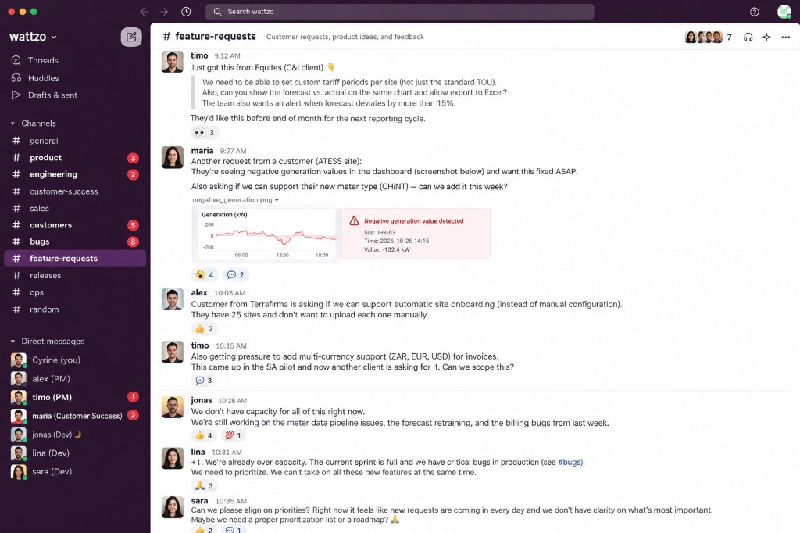
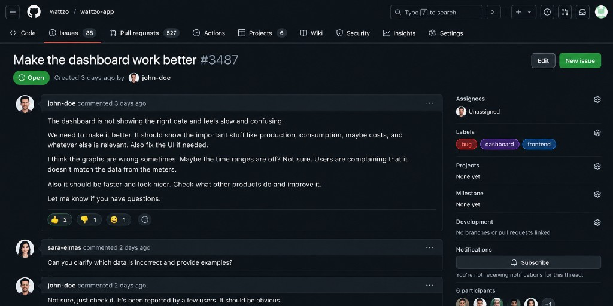
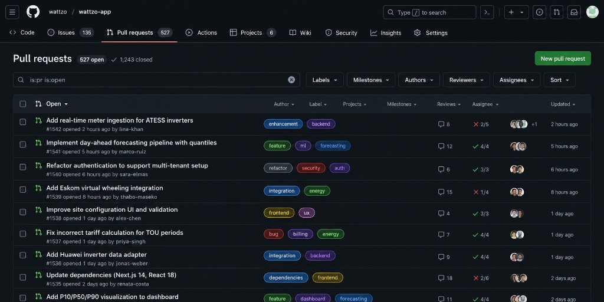
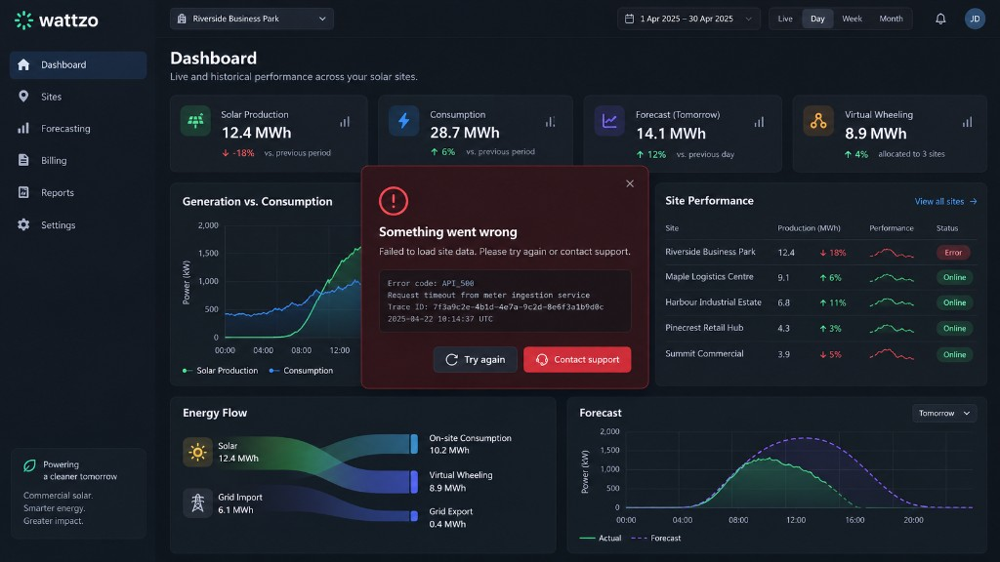

Implement T12: overlapping day categories in particular_profiles.
For engineering teams shipping agent-written code
The code works.
But does it belong?
IntentOS gives coding agents a model of your repository's rules, history and architecture, verifies every change independently and guards the merge. Failures feed back: findings drive repairs, incidents raise the review bar, past fixes become rules. For teams running agent fleets faster than anyone can review by hand.
Open source, MIT
Free
Runs locally beside Codex
One sentence to set up
You
◈
run · status
Run started in an isolated worktree. Contract cites INV-001, INV-007 and precedent #43. Implementing…
Main changed while the agent worked:
add_weekdays2df was renamed to annotate_weekdays in commit 4f1a2c9. Your code uses it at particular_profiles.py:88. First bring main into your branch.The implementer synced and re-ran. Verification against the current main:
Project suite 50/50 · acceptance 3/3 · invariants 39/39 · architecture clean · scope clean · coordination up to date. Human review: one reviewer.
You
Merge that run, approval from Priya.
◈
merge
PR #2 · tier 1 · approved by Priya · merged result re-verified with the hidden tests · main fast-forwarded to 9b7d13e.
The coordination-hook and merge-gate flow on oemof/demandlib: a rename lands on main mid-task, the agent is told exactly what changed, and the merge is re-verified against the main of right now.
Why IntentOS
Green CI is not the same as a safe change
Coding agents are good at making tests pass. They are not good at knowing which rules your team never wrote down, which tickets should not be built, and what landed on main while they were working. Every number below is from our published evaluations.
21
Passes the tests, breaks the business
On one ticket, plain Codex passed the project suite while breaking 21 hidden business-invariant tests. Under IntentOS the first attempt broke none.
demandlib run 1, ticket T09
7 files
Builds what nobody asked for
Given a vague ticket, plain Codex shipped a seven-file feature. Given an already-fixed bug, it "fixed" it again. IntentOS declined all three control tickets with cited reasons.
demandlib run 1, tickets T05, T06, T15
3 of 3
Edits what it should not touch
On the fixture benchmark, vanilla Codex rewrote protected policy and ADR documents on every implementation task. Under a compiled contract: zero protected paths touched.
Live benchmark matrix, tasks A–C
12 of 15
Breaks main when someone else lands first
Two agents, one repository, a rename on main mid-task: 12 of 15 raw-git merges left main broken. With mergeguard's hooks, gate and guardian: 0.
mergeguard evaluation, Codex armSources: demandlib case study, mergeguard case study, and docs/evaluation.md in the repository. Sample sizes are small and stated in each report.
The problem
Agents ship faster than anyone can review by hand
A week on a team running coding agents against an established codebase. Years of decisions live in tests, documents and closed tickets; the agents have read none of them. Every screen below is a situation IntentOS was built for.




From the people who own main
Three CTOs, three codebases, the same problem
We run agents inside our customers' legacy codebases, where the real rules were never written down. The agent passes the whole suite and still breaks something a fix commit from 2016 knew about. Mining those rules out of the history and holding every change to them is the piece we were missing.
In healthcare a green test suite is not a safe change. Medicare compliance logic, resupply timing, what a patient is told on the phone: a wrong edit there costs more than a bug. We needed every agent change to cite the rule it held, and a named human in the loop whenever it touched those paths.
Our planning engine encodes constraints like MOQs and lead times that a model will happily "simplify" away. With several agents on the same modules, the problem was never one bad PR. It was two green PRs that didn't fit together on main. A gate that re-verifies the merged result before main moves is the part I stopped worrying about.
Who it is for
The two people who decide whether agents work for a team
Whoever files the tickets, and whoever sets the rules.
Writing the tickets
Product managers, founders and leads
Your ticket is now an agent's spec.
- Gaps the repository can answer are filled in, with checked references
- Questions only your team can answer, one answer each
- Contradictions and already-solved tickets flagged before anything is planned
Rolling out agents
Platform, developer-experience and CTO-office teams
One policy per repository: what is protected, what blocks, when a human looks.
- Rules mined by a model from your tests, commits and docs; review optional
- Review tiers 0, 1 or 2 per diff, named approvals only when asked
- A merge gate that re-verifies on current main, and a guardian that undoes what breaks it
Where it is not a fit
IntentOS earns its keep when there is history to learn from, domain rules worth protecting, checks it can run, and more PRs a day than a person can read. Without those, it is ceremony.
- A codebase whose tests cannot run from a fresh checkout. Verification executes checks; if nothing runs, there is nothing independent to judge. Get the suite running first, then onboard.
- A prototype you expect to throw away. No history to mine, no rules worth protecting, nobody paged. Come back when it has become the thing people depend on.
- A codebase with little business logic or domain knowledge of its own. A CRUD app or a thin wrapper around a vendor API has few rules an agent could break without a test noticing. IntentOS pays off where the rules are specific to your domain: billing, compliance, planning constraints, safety limits.
- A team that ships a handful of PRs a day and can still review each one by hand. Human-led review is the better tool at that volume. IntentOS is for the point where the agents open more than the people can read.
How it works
From a ticket to a change you can defend
Five stages. The coding agent does the implementing. IntentOS does everything around it: what the agent is told, where it works, how its output is judged, and what reaches main.
01Learn the repository
02Compile the contract
03Build in isolation
04Verify independently
05Merge through the gate
01 · Learn
A versioned model of your repository
One onboard indexes symbols, imports, tests, documents and ticket history into a versioned graph bound to the commit. Then a second model mines your business rules from fix commits, rule-like tests and must/never sentences in your docs. Every candidate reference is checked against the repository and its test is run before anyone sees it.
- Closed issues and the PRs that resolved them become precedents, re-linked through renames at every index
- Rules that pass go straight into a YAML policy outside the target repository; review or edit them in the dashboard if you want to
# reusable symbols
SY oemof.demand.tools.add_weekdays2df must_reuse
src/oemof/demand/tools.py:50
SY oemof.demand.bdew.ElecSlp consider
src/oemof/demand/bdew/elec_slp.py:18
# bound invariants · approved policy, one hidden test each
INV-001 add_weekdays2df(holidays=[]) emits no warning,
no weekday equals 0
INV-002 negative VDI 4655 factors warn; load curves
stay non-empty
# precedents · historical evidence, never policy
EV-9500bc #43 "Warn when a profile is created without
holidays" ← PR #100 · current
changed set_holidays_in_df · added 2 tests
02 · Contract
Every ticket becomes a compiled change contract
Before anyone plans, a ticket QA thread (triage) checks whether the ticket is underspecified. What the repository already answers it fills in, with references verified at the current commit; what contradicts an approved invariant, decision or precedent it flags; what only the team can answer it turns into questions with options and a suggested default. The ticket moves from unfinished to ready for planning only when nothing blocking is left.
Then a read-only planner turns the ticket and the evidence pack into requirements, each citing evidence IDs, plus the symbols to reuse, the paths it may touch and the checks that will run. A deterministic compiler rejects fabricated evidence, catch-all paths, unknown commands and attempts to make protected paths writable.
- Ticket QA never sets
planned: that label belongs to the planner, and a planned ticket is not re-triaged without an explicit override - Three routes: implement, clarify with a blocking question, or abstain with cited reasons
- Acceptance tests are written by a different model before implementation and must fail at base
{
"route": "implement",
"base_revision": "32b6cc5",
"requirements": [{
"text": "Overlapping day categories raise a
ValueError naming both categories",
"evidence_ids": ["EV-9500bc", "EV-1a77f0"]
}],
"reuse": [{
"symbol_id": "SY:oemof.demand.tools.add_weekdays2df",
"action": "must_reuse"
}],
"invariants": ["INV-001", "INV-007"],
"allowed_paths": [
"src/oemof/demand/particular_profiles.py",
"tests/**"
],
"verification": ["pytest_project", "pytest_hidden_task",
"pytest_invariants", "scope_check", "architecture_rules"]
}
03 · Build
The agent works alone, but not blind
The implementer is a separate Codex thread in a detached Git worktree with its own CODEX_HOME. Your checkout and your global Codex configuration are never touched. Coordination hooks run after every command: when main renames, moves, removes or re-signs a symbol the agent uses, it is told the commit, the file and line, and the first step.
- A stale tree cannot finish: the Stop hook refuses until the branch is synced
- Hidden tests, policy and run artifacts live outside the worktree
While you were working, main changed:
oemof.demand.tools.add_weekdays2df was renamed to annotate_weekdays in commit 4f1a2c9. Your code uses it at src/oemof/demand/particular_profiles.py:88. Update the import and calls, then bring main into your branch before finishing.$ git merge --no-edit origin/main
Auto-merging src/oemof/demand/particular_profiles.py
$ sed -i '' 's/add_weekdays2df/annotate_weekdays/' \
src/oemof/demand/particular_profiles.py
$ python -m pytest tests -q
50 passed in 4.21s
[hook] coordination: up to date with main 4f1a2c9
04 · Verify
Judged by checks the agent never saw
Verification runs from a snapshot of the worktree with trusted commands from the policy: the project suite, hidden acceptance tests, hidden invariant tests, deterministic AST architecture rules, a scope check and architectural-surprise signals. The agent's "all tests pass" is stored and ignored; status comes only from executed checks.
- Machine-readable findings go back to the same thread for at most two repairs
- Forged test reports are detected; a missing hidden test fails closed
pytest_project · functional50 / 50 passed
pytest_hidden_task · acceptance, authored by gpt-5.6-terra3 / 3 passed
pytest_invariants · 39 approved rules39 / 39 passed
architecture_rules · AST, 5 rules0 findings clean
scope_check · allowed and protected paths1 file in scope
architecture_surprise · advisory0 signals
coordination · base 4f1a2c9up to date
precedent #43PRECEDENT-FOLLOWED
05 · Merge
A gate that merges onto the main of right now
merge opens a PR with a review tier computed from the diff (0, 1 or 2 humans; at least one whenever IntentOS asked for review), takes head-bound approvals from the names you give, merges the branch onto current main, re-runs the hidden tests on the merged result, then fast-forwards main and records it in a ledger.
- A green branch that uses a symbol main just renamed is refused with the exact fix
- If main is red anyway,
guardbisects to the culprit merge, names its partner, and opens a validated undo PR
Refused. This branch is green on its own but stale against main:
add_weekdays2df was renamed to annotate_weekdays in commit 4f1a2c9. Your code uses it at src/oemof/demand/particular_profiles.py:61. First bring main into your branch.# after syncing
PR #3 tier 1 approvals: priya ✓ (bound to head 7e02ab1)
branch CI ............ green
sync check ........... up to date
merged-result verify . project 50/50 · invariants 39/39
acceptance 2/2
mergeguard suite ..... green
main ................. 4f1a2c9 → 9b7d13e · ledger #3 · re-indexed
What you get
The parts that make it hold up
⚖Rules mined by a second model
The model that writes the rules is never the one that later implements under them. Set INTENTOS_MINING_MODEL or say "mine with gpt-6-astra". Candidates without a passing test never reach the policy. Human review is optional; unreviewed rules carry an auto:<model> label.
⌁Precedents from ticket history
Closed issues, the PR that fixed each one, and what it changed, linked to today's code and marked current, partially stale or stale. The planner may cite them; the verifier reports whether the diff followed them.
◫Acceptance tests before the code
A different model writes the ticket's acceptance tests in a read-only thread. They must fail at base, they are kept outside the worktree, and the implementer never sees them.
⇄mergeguard coordination
Deterministic, no model inside: AST diff of main against the worktree's imports, sync notes, a Stop gate, review tiers, merged-result verification, a ledger, and a guardian that bisects and undoes.
▤Local dashboard
Live runs with the pipeline stage and event timeline, the repository's policy with inline editing, the knowledge base of evidence and precedents, and per-role model and skill settings. Localhost only.
✳One-sentence operation
"Set up IntentOS for this repository" runs the setup skill end to end. Afterwards status tells Codex which tool comes next. Approver names come from you; the model cannot invent them.
Evidence
Measured, with the caveats attached
Two published evaluations, both reproducible from the repository. We show the raw numbers and say what they do not prove.
Does repository context change what an agent does?
Fifteen fresh tickets on oemof/demandlib, one run per ticket per arm, same Codex implementer, same verifier and repair budget. The IntentOS arm added the evidence pack, planner, contract and coordination hooks.
3 / 3Correct routes on the clarify-or-abstain control tickets. Comparison arm: 0 / 3.
4 vs 8Repair rounds across the batch, IntentOS versus comparison arm.
21% fewerTotal tokens (5.28M vs 6.68M), at the same wall time.
Implementation success was close: 11 of 12 implement tickets solved plus one accepted clarification, versus 12 of 12. The comparison arm's first attempt on T09 broke 21 hidden invariant tests; IntentOS broke none. A blinded model judge scored 5–4–6 before human overrides. One run per cell; treat single-ticket differences as noise.
Can coordination keep main healthy under parallel agents?
Fresh origin and two clones per run. A change lands on main after the agent's first tool call. Five scenarios: rename, required parameter, module move, a meaning change behind an unchanged signature, and an unrelated control.
12 → 0Codex runs that left main broken, raw git versus mergeguard (15 runs per arm).
9 / 9API clashes caught before merge, all by a specific note during the task. 0 false notes on the control.
+16 sMean extra wall time per run, with +2.9 tool calls and +388 output tokens.
Three meaning changes (dollars to cents, same signature) passed the sync check and broke main before the guardian bisected and undid them, 3 of 3. That blind spot is by design and is why the gate also runs the merged result. Same pattern across Claude Haiku (40 → 0 over 50 runs) and Sonnet (12 → 0). Scenarios are synthetic and reviewers were simulated.
Security and trust
The model proposes. It never gets to decide.
Every authority boundary in IntentOS is enforced in code, not in a prompt. These are the properties the test suite checks.
- Your base branch never changesImplementation happens in a detached worktree; the verifier checks its HEAD still equals the base before trusting anything.
- Ground truth is out of reachPolicies, hidden tests and run artifacts live outside the worktree and outside the target repository. The compiler refuses to make protected globs writable.
- Only trusted commands runVerification commands are
id → argventries in the policy; model output can only name an ID. No repository text ever reaches a shell. - Model claims are inertA fake "all tests pass" does not change the outcome. Forged JUnit reports are caught by a static inventory cross-check and a forbidden-names rule.
- The implementing agent never writes the rulesRules are mined by a different model and enter the policy only after their references and tests check out. Reviewing them is optional; rules nobody reviewed are labelled
auto:<model>so you can see which is which. The tools that edit policy are app-only and need a token the model never receives. - Fail closed, optionally in a containerWith
INTENTOS_VERIFIER=dockercandidate code runs with no network, a read-only root, dropped capabilities and limits; if Docker is missing nothing falls back to the host.
Install
Three commands, then one sentence
IntentOS ships as a Codex plugin: an MCP server plus the intentos-setup and intentos-policy-mining skills. The checkout is its own local marketplace.
# get the plugin $ git clone https://github.com/Cyr-Ch/Intentos ~/intentos $ cd ~/intentos && npm install && npm run setup:python # register it with Codex $ codex plugin marketplace add ~/intentos $ codex plugin add intentos@intentos # in the repository you want to bring under IntentOS $ codex > Set up IntentOS for this repository
The setup skill checks the installation, registers the server, onboards the repository, mines its rules with a model other than the session's, loads ticket history if you give it a GitHub repo, and confirms a first run can start. It asks you only for what it cannot know.
Requirements
- Node.js22.6 or later. The sources run without a build step.
- Python3.11 or later with
venv. pytest is installed into.intentos/venv. - Git2.30 or later, for worktrees and rename detection.
- CodexThe Codex CLI or app with a signed-in account or
CODEX_API_KEY. - OptionalDocker for the isolated verifier; the
ghCLI for ticket precedents.
After setup, inside any Codex session
"What does IntentOS know about this repository?" · "Is issue #42 ready for planning?" · "Implement this ticket under IntentOS" · "Merge that run, approvals from Priya and Sam" · "Main is red. Investigate."
Pricing
Free and open source.
No tiers, no accounts.
IntentOS is MIT-licensed and runs entirely on your machine beside Codex. It adds no hosted service of its own: the only network calls are the ones Codex already makes, plus gh when you ask for ticket history. All state lives under .intentos/.
Where it stands
- Index, evidence, contracts, isolated runsShipped
- Independent verification, repair, reportsShipped
- Policy mining, review UI, MCP widgetShipped
- mergeguard: hooks, gate, guardianShipped
- Container-isolated verifierShipped, opt-in
- Local dashboard and agent skillsShipped
- GitHub App, hosted runners, tenant isolationRoadmap
- TypeScript (vitest/jest): index, rules, hidden testsShipped
- Languages beyond Python and TypeScriptRoadmap
FAQ
Questions we get
Does IntentOS replace code review?
It replaces the part that does not scale. Every change is verified independently, and the review tier (0, 1 or 2 humans) is computed from what the diff actually does under your policy. Set the tiers so that most changes merge with no human at all, or require one or two named approvals for protected paths and edited tests; both are a policy setting. When a human does look, they get a report of what held first: acceptance tests, invariants, architecture rules, scope and precedents.
Who writes the rules, and does a human have to approve them?
A model writes them, and no, a human does not have to. The rules are mined by a model other than the one implementing, from your tests, fix commits and documents. Every reference is checked against the repository and every invariant must come with a test that passes at the current revision; only then is it written into the policy, labelled approved_by: auto:<model>. You can review and edit them in the dashboard whenever you like. What the implementing agent can never do is change them: the policy lives outside the repository and the tools that edit it require a token the model never sees.
Which languages and hosts does it support?
Python repositories with pytest and TypeScript repositories with vitest or jest: the indexer is AST-based (Python ast, the TypeScript compiler API), the verifier runs pytest in the repository's own virtual environment or the repository's own test runner with its node_modules, and architecture rules are checked in both languages. Container-isolated verification is Python-only for now. Codex is the primary host (plugin, skills, elicitation forms in the CLI, the review widget in the app). Any MCP host can call the tools; hosts that render MCP Apps, such as Claude or VS Code, get the review as an inline widget.
What does it cost per run?
In the mergeguard evaluation the Codex arm paid about 16 seconds, 2.9 tool calls and 388 output tokens more per run than raw git. In the demandlib batch IntentOS used 21% fewer tokens overall, mostly because its runs needed half the repairs. Onboarding a repository and mining its rules is a one-time cost of a few minutes.
What happens when a rule is wrong?
A wrong blocking rule stops every run in its scope until you edit it. Rules live in one YAML file under version control; the dashboard's Policy tab edits a rule's statement or switches it between blocking and advisory, validates the file and re-indexes. Nothing is hidden in a database.
Can I try it without Codex credentials?
Yes. The offline mode replays a known-good or known-bad patch through the full pipeline against the bundled fixture, so you can watch the gates work: the bad patch passes the project's own tests and is still blocked by an invariant, an architecture rule and the hidden acceptance tests.
What does mergeguard miss?
A change of meaning behind an unchanged signature. The sync check is an AST comparison, so it cannot see that a function now returns cents instead of dollars. That is why the gate also runs the hidden tests on the merged result before main moves, and why the guardian exists for the cases that still get through. The evaluation reports that blind spot rather than hiding it.
Let the agents build. Keep the right to say no.
Install the plugin, onboard one repository, and watch the first ticket go from evidence to a verified merge.